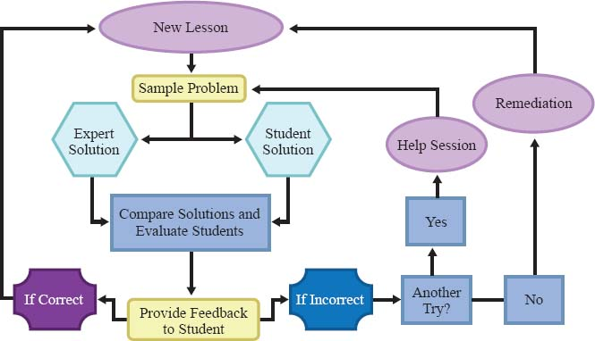

A Young and Talented Web Developer and
User Interface Designer
Sleep deprivation
September 1, 2022
I wake up groggy and disoriented. It takes me a few moments to remember where I am and what day it is. I am in my bedroom, lying in my bed, and it is Monday morning. I reluctantly get out of bed and begin my day. I am not looking forward to today. I have a lot of work to do and I am not feeling very motivated. I go through the motions, getting ready for my day and trying to get myself into a better headspace. I head to my kitchen to make breakfast and I am surprised to find that my cat is already there, meowing for food. I give her some food and she rubs against my leg, purring. I start to feel a little better. I eat breakfast and then head to my desk to start working.
A lost Girl on Venus

September 17, 2022
In many schools today, the phrase "computer-aided instruction" means making the computer teach the child. One might say the computer is being used to program the child. In my vision, the child programs the computer and, in doing so, both acquires a sense of mastery over a piece of the most modern and powerful technology and establishes an intimate contact with some of the deepest ideas from science, from mathematics, and from the art of intellectual model building.”